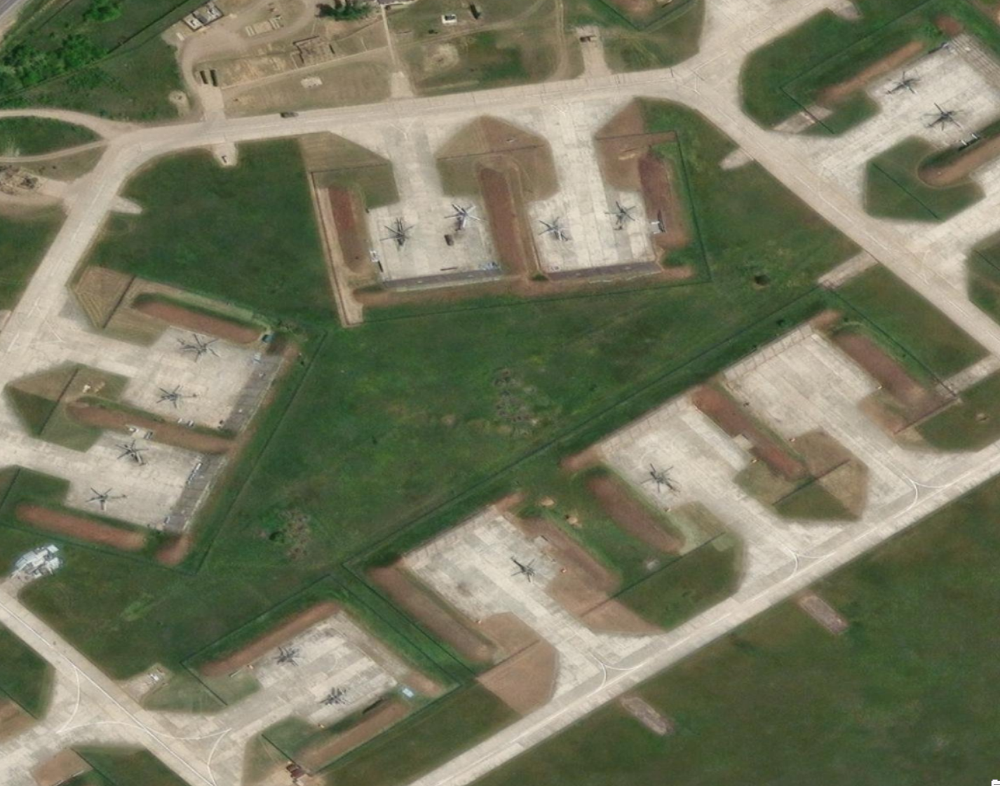

Soviet Airfield Map
Map | Reference | Clickable
Browse airfield locations visually through the interactive map view.

Modern Era Reference
A reference landing page for Soviet Cold War airfields, including interactive mapping and alphabetical site listings.
Soviet airfields were spread across vast geographic distances and tied to strategic aviation, homeland defense, naval aviation, and regional force posture.
This subsection gives you two useful ways into that material: a clickable map and an alphabetical list of airfields.

Map | Reference | Clickable
Browse airfield locations visually through the interactive map view.
List | Reference | Alphabetical
Use the alphabetical list when you want direct lookup instead of map browsing.